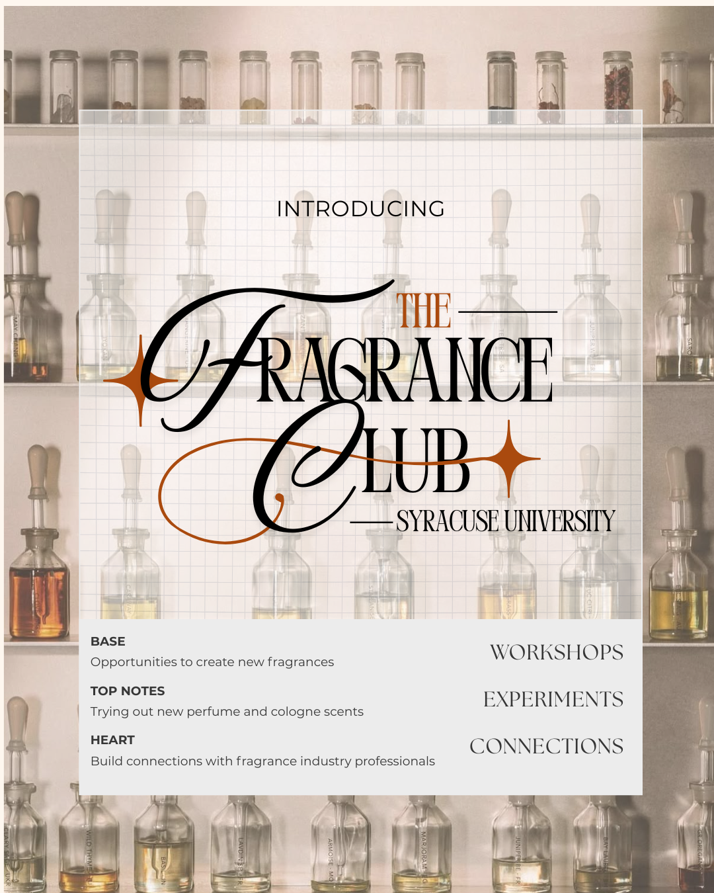
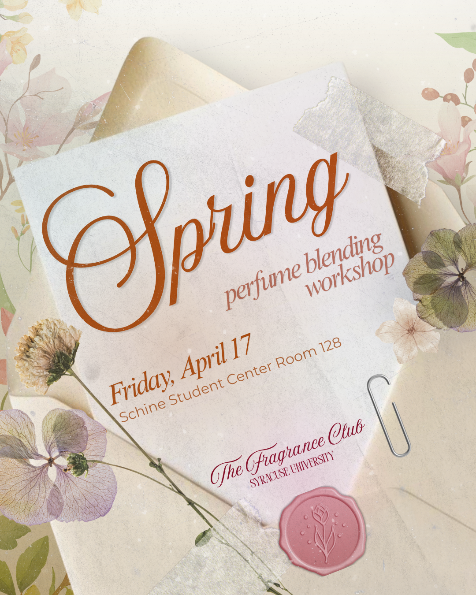

Graphic Designer & Photographer
The Fragrance Club
Rebuilding the visual identity of Syracuse University's fragrance club from the ground up. The content strategy reached 3.5K accounts and 20K+ views within 90 days, and first-week posts hit 20K+ views against a 300-view baseline, a 65× lift.
View projectSyracuse, NYNov 2025 — Present